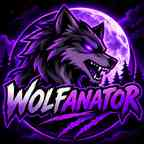

PARTIE RAPIDE
Rejoindre une partie
Rejoignez un salon ouvert et jouez avec d'autres personnes.

WOLFANATORLE VILLAGE EN LIGNELE VILLAGE N'EST PAS CE QU'IL SEMBLE ÊTRE
Formez votre équipe, découvrez votre rôle et tentez de démasquer les loups. Mais prenez garde : les apparences sont trompeuses.
LES RÈGLES DU VILLAGE
Les loups choisissent une cible. La voyante enquête et le protecteur peut sauver une personne.
Les joueurs encore en vie débattent et votent pour tenter de démasquer un loup.
Le village gagne quand tous les loups sont éliminés. Les loups gagnent lorsqu'ils sont aussi nombreux que les autres joueurs en vie.